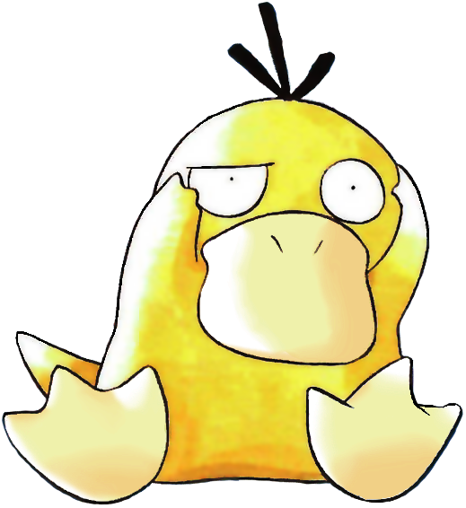

Oque é?
Climas alteram o ambiente de batalha, ativando Habilidades, modificando certos movimentos e potencialmente danificando o Pokémon na batalha ou afetando suas estatísticas. Eles foram incluídos em todos os jogos da série principal desde a Geração II. Apenas um tipo de clima pode estar presente por vez; qualquer efeito que cria um clima removerá o clima anterior.
Na Geração II, a única maneira de causar o clima era através de um Pokémon usando um movimento durante a batalha. A Geração III introduziu habilidades relacionadas aos climas, bem como aos climas no mundo aberto; iniciar uma batalha em um local aberto com um clima faz com que esse clima esteja presente desde o inicio da batalha; A Geração IV introduziu quatro itens(as Pedras de Calor, Umidade, Suavidade e Geladas) que aumentam a duração do clima causado por um movimentos ou habilidade.A Geração V introduziu as estações, que podem afetar o clima em determinados locais, e a Geração VI introduziu um novo método de evolução afetado pelo clima. A Geração VIII introduziu efeitos no mundo aberto que se assemelham ao clima, mas não correspondem diretamente ao clima da batalha.